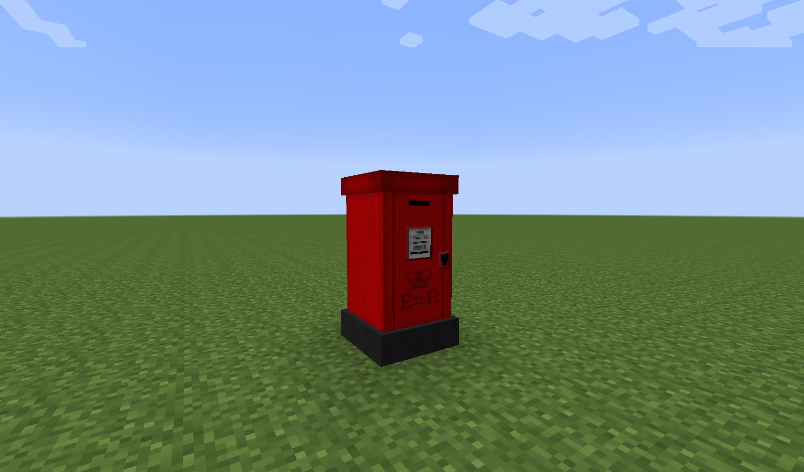

Изначально она закрыта:
Нажатие той кнопочки её откроет:
Для начала поговорим об апгрейдах.
Апгрейды зачастую выполняют функцию сверх-прокачки или добавляют какую то полезную опцию. Вставлять их надо в квадратные слоты.
У некоторых апгрейдов есть запас прочности (1000 максимум и изначально), которая тратится если апгрейд принял на себя что то не хорошее. Со временем они сами себя чинят, но если прочность упадёт до нуля они сломаются и на их месте появится Broken Upgrade. Его можно починить если закинуть в местную машинку с одним слитком Chronosteel. Правда на выходе получается пустой апгрейд.
Вот список:
Explosion Protection – Этот апгрейд принимает на себя урон от взрыва снаружи и внутри.
Combat Protection – Не знаю как работает. Возможно он ничего не делает.
Missed Contol Protection – Эта штука нажмёт на подсвеченный рычаг если игрок не успел.
Эти апгрейды пассивны и не ломаются.
Speed Level – Теоретически должен позволять Тардис разгонятся больше допустимого рычагом разгона. Но как подсказывает не полная англоязычная вики и тесты, он не делает ничего.
Следующие 4 делают то же что и прокачка.
Shield Level – Добавляет 500 ед к щиту.
Max Rooms Level – Добавит 6 комнат к лимиту.
Energy Level – Добавляет 1000 ед энергии к хранилищу.
Energy Regen Level – Повышает восстановление энергии на одну единицу.
Chameleon Circuit – Самый бесполезный апгрейд. Позволяет сменить скин Тардис. Переключается правым кликом с шифтом. Изменение вступит в силу только после приземления. Не нужно постоянно держать его в слоте. Можно поставить, переместится и вытащить.
New Police Box:
Post Box:
Old Police Box (Вариант по умолчанию):

А теперь расскажу зачем там кругляшки. Я кстати не зря их обвёл разными цветами. :)
Вообщем то это что то типа пробок в старых счётчиках.
Если прочность щитов (Лицевая консоль, элемент 3) снизится до минимума, то их начнёт выбивать.
Это приведёт к отказу элементов консоли, и Тардис в целом. Если выбило вообще все «пробки», то не получится даже взлететь.
Вообще как я заметил у них нет привязки к каким то элементам управления. Элементы перестают функционировать от количества выбитых крягляшков.
Чем ломаются? Любым взрывом у будки или консоли.
Чтобы починить их нужно кликнуть по ним определённым ресурсом.
Синие нужно чинить слитком Chronosteel.
Оранжевые при помощи Dalekanium.
Голубой требует Kontron Crystal, а те что не помечены можно починить простым кликом без ресурса.